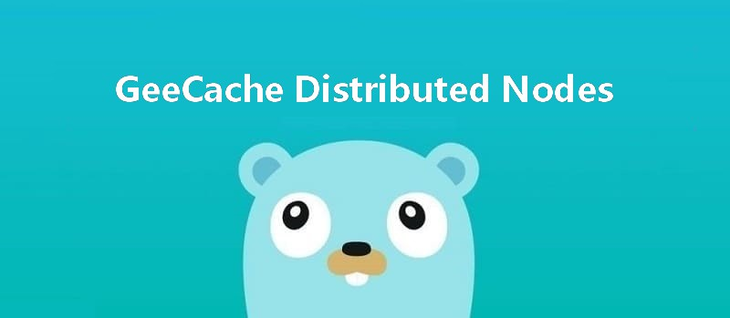

动手写分布式缓存 - GeeCache第五天 分布式节点
7天用 Go语言/golang 从零实现分布式缓存 GeeCache 教程(7 days implement golang distributed cache from scratch tutorial)，动手写分布式缓存，参照 groupcache 的实现。本文介绍了为 GeeCache 添加了注册节点与选择节点的功能，并实现了 HTT…

本文是7天用Go从零实现分布式缓存GeeCache的第五篇。
- 注册节点(Register Peers)，借助一致性哈希算法选择节点。
- 实现 HTTP 客户端，与远程节点的服务端通信，代码约90行
1 流程回顾
是
接收 key --> 检查是否被缓存 -----> 返回缓存值 ⑴
| 否 是
|-----> 是否应当从远程节点获取 -----> 与远程节点交互 --> 返回缓存值 ⑵
| 否
|-----> 调用`回调函数`，获取值并添加到缓存 --> 返回缓存值 ⑶
我们在GeeCache 第二天 中描述了 geecache 的流程。在这之前已经实现了流程 ⑴ 和 ⑶，今天实现流程 ⑵，从远程节点获取缓存值。
我们进一步细化流程 ⑵：
使用一致性哈希选择节点 是 是
|-----> 是否是远程节点 -----> HTTP 客户端访问远程节点 --> 成功？-----> 服务端返回返回值
| 否 ↓ 否
|----------------------------> 回退到本地节点处理。
2 抽象 PeerPicker
day5-multi-nodes/geecache/peers.go - github
package geecache
// PeerPicker is the interface that must be implemented to locate
// the peer that owns a specific key.
type PeerPicker interface {
PickPeer(key string) (peer PeerGetter, ok bool)
}
// PeerGetter is the interface that must be implemented by a peer.
type PeerGetter interface {
Get(group string, key string) ([]byte, error)
}
- 在这里，抽象出 2 个接口，PeerPicker 的
PickPeer()方法用于根据传入的 key 选择相应节点 PeerGetter。 - 接口 PeerGetter 的
Get()方法用于从对应 group 查找缓存值。PeerGetter 就对应于上述流程中的 HTTP 客户端。
3 节点选择与 HTTP 客户端
在 GeeCache 第三天 中我们为 HTTPPool 实现了服务端功能，通信不仅需要服务端还需要客户端，因此，我们接下来要为 HTTPPool 实现客户端的功能。
首先创建具体的 HTTP 客户端类 httpGetter，实现 PeerGetter 接口。
day5-multi-nodes/geecache/http.go - github
type httpGetter struct {
baseURL string
}
func (h *httpGetter) Get(group string, key string) ([]byte, error) {
u := fmt.Sprintf(
"%v%v/%v",
h.baseURL,
url.QueryEscape(group),
url.QueryEscape(key),
)
res, err := http.Get(u)
if err != nil {
return nil, err
}
defer res.Body.Close()
if res.StatusCode != http.StatusOK {
return nil, fmt.Errorf("server returned: %v", res.Status)
}
bytes, err := io.ReadAll(res.Body)
if err != nil {
return nil, fmt.Errorf("reading response body: %v", err)
}
return bytes, nil
}
var _ PeerGetter = (*httpGetter)(nil)
- baseURL 表示将要访问的远程节点的地址，例如
http://example.com/_geecache/。 - 使用
http.Get()方式获取返回值，并转换为[]bytes类型。
第二步，为 HTTPPool 添加节点选择的功能。
const (
defaultBasePath = "/_geecache/"
defaultReplicas = 50
)
// HTTPPool implements PeerPicker for a pool of HTTP peers.
type HTTPPool struct {
// this peer's base URL, e.g. "https://example.net:8000"
self string
basePath string
mu sync.Mutex // guards peers and httpGetters
peers *consistenthash.Map
httpGetters map[string]*httpGetter // keyed by e.g. "http://10.0.0.2:8008"
}
- 新增成员变量
peers，类型是一致性哈希算法的Map，用来根据具体的 key 选择节点。 - 新增成员变量
httpGetters，映射远程节点与对应的 httpGetter。每一个远程节点对应一个 httpGetter，因为 httpGetter 与远程节点的地址baseURL有关。
第三步，实现 PeerPicker 接口。
// Set updates the pool's list of peers.
func (p *HTTPPool) Set(peers ...string) {
p.mu.Lock()
defer p.mu.Unlock()
p.peers = consistenthash.New(defaultReplicas, nil)
p.peers.Add(peers...)
p.httpGetters = make(map[string]*httpGetter, len(peers))
for _, peer := range peers {
p.httpGetters[peer] = &httpGetter{baseURL: peer + p.basePath}
}
}
// PickPeer picks a peer according to key
func (p *HTTPPool) PickPeer(key string) (PeerGetter, bool) {
p.mu.Lock()
defer p.mu.Unlock()
if peer := p.peers.Get(key); peer != "" && peer != p.self {
p.Log("Pick peer %s", peer)
return p.httpGetters[peer], true
}
return nil, false
}
var _ PeerPicker = (*HTTPPool)(nil)
Set()方法实例化了一致性哈希算法，并且添加了传入的节点。- 并为每一个节点创建了一个 HTTP 客户端
httpGetter。 PickerPeer()包装了一致性哈希算法的Get()方法，根据具体的 key，选择节点，返回节点对应的 HTTP 客户端。
至此，HTTPPool 既具备了提供 HTTP 服务的能力，也具备了根据具体的 key，创建 HTTP 客户端从远程节点获取缓存值的能力。
4 实现主流程
最后，我们需要将上述新增的功能集成在主流程(geecache.go)中。
day5-multi-nodes/geecache/geecache.go - github
// A Group is a cache namespace and associated data loaded spread over
type Group struct {
name string
getter Getter
mainCache cache
peers PeerPicker
}
// RegisterPeers registers a PeerPicker for choosing remote peer
func (g *Group) RegisterPeers(peers PeerPicker) {
if g.peers != nil {
panic("RegisterPeerPicker called more than once")
}
g.peers = peers
}
func (g *Group) load(key string) (value ByteView, err error) {
if g.peers != nil {
if peer, ok := g.peers.PickPeer(key); ok {
if value, err = g.getFromPeer(peer, key); err == nil {
return value, nil
}
log.Println("[GeeCache] Failed to get from peer", err)
}
}
return g.getLocally(key)
}
func (g *Group) getFromPeer(peer PeerGetter, key string) (ByteView, error) {
bytes, err := peer.Get(g.name, key)
if err != nil {
return ByteView{}, err
}
return ByteView{b: bytes}, nil
}
- 新增
RegisterPeers()方法，将 实现了 PeerPicker 接口的 HTTPPool 注入到 Group 中。 - 新增
getFromPeer()方法，使用实现了 PeerGetter 接口的 httpGetter 从访问远程节点，获取缓存值。 - 修改 load 方法，使用
PickPeer()方法选择节点，若非本机节点，则调用getFromPeer()从远程获取。若是本机节点或失败，则回退到getLocally()。
5 main 函数测试。
day5-multi-nodes/main.go - github
var db = map[string]string{
"Tom": "630",
"Jack": "589",
"Sam": "567",
}
func createGroup() *geecache.Group {
return geecache.NewGroup("scores", 2<<10, geecache.GetterFunc(
func(key string) ([]byte, error) {
log.Println("[SlowDB] search key", key)
if v, ok := db[key]; ok {
return []byte(v), nil
}
return nil, fmt.Errorf("%s not exist", key)
}))
}
func startCacheServer(addr string, addrs []string, gee *geecache.Group) {
peers := geecache.NewHTTPPool(addr)
peers.Set(addrs...)
gee.RegisterPeers(peers)
log.Println("geecache is running at", addr)
log.Fatal(http.ListenAndServe(addr[7:], peers))
}
func startAPIServer(apiAddr string, gee *geecache.Group) {
http.Handle("/api", http.HandlerFunc(
func(w http.ResponseWriter, r *http.Request) {
key := r.URL.Query().Get("key")
view, err := gee.Get(key)
if err != nil {
http.Error(w, err.Error(), http.StatusInternalServerError)
return
}
w.Header().Set("Content-Type", "application/octet-stream")
w.Write(view.ByteSlice())
}))
log.Println("fontend server is running at", apiAddr)
log.Fatal(http.ListenAndServe(apiAddr[7:], nil))
}
func main() {
var port int
var api bool
flag.IntVar(&port, "port", 8001, "Geecache server port")
flag.BoolVar(&api, "api", false, "Start a api server?")
flag.Parse()
apiAddr := "http://localhost:9999"
addrMap := map[int]string{
8001: "http://localhost:8001",
8002: "http://localhost:8002",
8003: "http://localhost:8003",
}
var addrs []string
for _, v := range addrMap {
addrs = append(addrs, v)
}
gee := createGroup()
if api {
go startAPIServer(apiAddr, gee)
}
startCacheServer(addrMap[port], []string(addrs), gee)
}
main 函数的代码比较多，但是逻辑是非常简单的。
startCacheServer()用来启动缓存服务器：创建 HTTPPool，添加节点信息，注册到 gee 中，启动 HTTP 服务（共3个端口，8001/8002/8003），用户不感知。startAPIServer()用来启动一个 API 服务（端口 9999），与用户进行交互，用户感知。main()函数需要命令行传入port和api2 个参数，用来在指定端口启动 HTTP 服务。
为了方便，我们将启动的命令封装为一个 shell 脚本：
#!/bin/bash
trap "rm server;kill 0" EXIT
go build -o server
./server -port=8001 &
./server -port=8002 &
./server -port=8003 -api=1 &
sleep 2
echo ">>> start test"
curl "http://localhost:9999/api?key=Tom" &
curl "http://localhost:9999/api?key=Tom" &
curl "http://localhost:9999/api?key=Tom" &
wait
trap命令用于在 shell 脚本退出时，删掉临时文件，结束子进程。
$ ./run.sh
2020/02/16 21:17:43 geecache is running at http://localhost:8001
2020/02/16 21:17:43 geecache is running at http://localhost:8002
2020/02/16 21:17:43 geecache is running at http://localhost:8003
2020/02/16 21:17:43 fontend server is running at http://localhost:9999
>>> start test
2020/02/16 21:17:45 [Server http://localhost:8003] Pick peer http://localhost:8001
2020/02/16 21:17:45 [Server http://localhost:8003] Pick peer http://localhost:8001
2020/02/16 21:17:45 [Server http://localhost:8003] Pick peer http://localhost:8001
...
630630630
此时，我们可以打开一个新的 shell，进行测试：
$ curl "http://localhost:9999/api?key=Tom"
630
$ curl "http://localhost:9999/api?key=kkk"
kkk not exist
测试的时候，我们并发了 3 个请求 ?key=Tom，从日志中可以看到，三次均选择了节点 8001，这是一致性哈希算法的功劳。但是有一个问题在于，同时向 8001 发起了 3 次请求。试想，假如有 10 万个在并发请求该数据呢？那就会向 8001 同时发起 10 万次请求，如果 8001 又同时向数据库发起 10 万次查询请求，很容易导致缓存被击穿。
三次请求的结果是一致的，对于相同的 key，能不能只向 8001 发起一次请求？这个问题下一次解决。
附 推荐阅读
白话复盘：把节点选择和数据获取真正串起来
两个接口形成清晰边界
PeerPicker 回答“这个 key 应该找哪台节点”，PeerGetter 回答“怎样从那台节点取到指定 group/key”。前者是调度，后者是传输。拆成接口后，一致性哈希、HTTP 客户端和 Group 不必互相知道内部细节，也便于在测试中替换为假的节点。
完整读取流程
- 用户调用
Group.Get(key)，先检查本机主缓存。 - 未命中后进入
load，调用peers.PickPeer(key)。 - 如果一致性哈希选中其他节点，就调用对应的
httpGetter.Get。 - 远端返回成功，直接把数据交给调用者。
- 没有远端节点、选中自己或远程请求失败时，再回退到
getLocally，通过 Getter 访问源数据并写入本机缓存。
选中自己时不能再发 HTTP 给自己，然后让自己的 Group 又选择自己，否则会形成递归请求。PickPeer 因此会明确排除本节点。
为什么远程失败后允许本地回源
缓存的首要目标通常是提高可用性和速度。某个缓存节点临时不可达时，直接访问数据库虽然更慢，但往往比整个请求失败更可接受。这是教学版选择的降级策略。真实系统还需结合数据库容量、错误类型和限流策略决定是否回源，避免远端故障把压力全部打到源站。
容易踩坑
- 远程获取必须设置连接和整体超时；否则一个坏节点会长期占住调用 goroutine。
- 不要无上限重试，尤其不要在多个节点间循环重试，这会放大故障流量。
- 当前版本的远程结果没有写入请求方主缓存，数据主要由负责人节点缓存；修改策略前应先明确副本与一致性语义。
- 节点列表更新与请求读取可能并发发生，生产实现需要同步或不可变快照。
动手检查
启动三个端口，给同一个 key 分别打印所选 peer。确认三台进程的选择一致，并且只有负责人回源。再停止负责人，观察请求是否按预期降级到本地 Getter，同时记录这会给源站带来的额外压力。